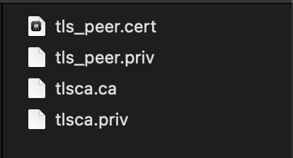

灾备节点介绍¶
功能说明¶
CVP是一个独立运行的节点，可以对 线上节点（目前包括VP、NVP）进行实时的容灾备份，当线上节点发生了不可恢复的错误时，通过运维命令自动对CVP进行升级，替代原节点继续工作 。实际使用过程中，CVP和线上节点仅支持一对一连接。
Hyperchain中支持 分区共识 功能，即一个节点上可以同时运行多个完全隔离的分区，节点在不同分区内可以是不同的角色，如VP或者NVP。CVP提供节点级别的热备服务，可以对目标 节点 进行完全的备份，即不论目标节点上有多少分区、不同分区内的节点角色（VP或NVP）是否一致，均可以实现备份。
数据同步¶
CVP上的备份数据主要包括：
相连节点的配置文件；
相连节点上所有分区的MQ注册队列；
相连节点上所有分区的链上数据（包括区块及账本数据）。
本节将对CVP的工作方式进行简单介绍，具体操作请参考第二到第四章节内容。
配置文件¶
为了使CVP能够替代线上节点工作，CVP节点的二进制所在目录中需要保存两份配置文件：
configuration 目录下保存CVP节点自己运行时所需的配置文件，如数据库路径、证书路径、网络等配置，可以参考《运维手册》对CVP进行必要的配置；
system/cvp/configuration_vp 目录下保存了CVP节点所连接的线上节点的全量配置文件， 这份配置文件由CVP自动同步并保持更新，无须用户手动准备 。
CVP会对目标节点上的配置文件进行全量的同步，当CVP连接到目标节点，并且完成一次握手后，会触发一次同步，而后续若发生网络断连恢复或节点重启等事件时也会触发一次同步；我们提供了IPC命令以及RPC命令对一些配置项进行在线的修改（不宕机），那么对于有一些比较重要的配置项的在线修改，也会以 强同步 的方式同步至CVP上。这里的强同步指的是一次配置文件的修改，需要在目标节点和CVP节点都完成修改后，才正常返回。
MQ队列¶
CVP会在进行握手的时机进行 全量MQ队列的同步 ；在线上节点上进行的MQ队列的 注册/解注册事件也 将会被自动同步至CVP节点，无须用户手动在CVP节点上重复注册。同样的，事件同步方式为强一致，即完成队列注册操作意味着两个节点都注册完成了该队列，保证CVP升级后能继续提供完整的MQ服务。
需要注意的是，CVP只同步队列，不同步MQ消息。
链上数据¶
CVP将自动同步线上节点所有分区的区块及账本数据。 与前述同步方式不同，链上数据的同步是 弱一致 的，这种方式可以尽可能地保证线上节点的性能不受太大影响。
节点准备¶
配置文件¶
为了启用CVP功能，需要对以下配置文件进行修改：
修改系统级别dynamic.toml¶
configuration/dynamic.toml 中需要修改的配置项如下所示:
[cvp]enable = false node_type = “provider” remote = [“”]
上述配置项的具体含义如下所示：
enable ：是否开启CVP功能，CVP要与目标节点建立连接，双方必须开启该字段，可通过IPC命令动态开启该开关；
node_type ：节点类型，可选项为provider或receiver，CVP配置为receiver，线上节点配置为provider；
remote ：对端节点的hostname以及地址。
举例来说，一份正确的新增配置如下所示:
// 线上节点配置如下
[cvp]
enable = true
node_type = "provider"
remote = ["cvp 127.0.0.1:50015"]
// CVP节点配置如下
enable = true
node_type = "receiver"
remote = ["node1 127.0.0.1:50011"]
修改Namespace级别ns_dynamic.toml¶
仅CVP节点需要修改ns_dynamic.toml配置文件，沿用前一节中的例子，CVP节点的 configuration/global/ns_dynamic.toml 的正确修改如下所示:
[self]
n = 1 # 运行时修改。表示所连vp节点的个数，该值在节点运行过程中会实时变化。
hostname = "cvp" # 本地节点的hostname名称
new = false # 运行时修改。新节点成功加入网络以后，该值会变为false。
type = "cvp"
trustNodes = false #运行时修改。节点成功加入共识以后，该值会变为false。当需要信任配置当nodes列表时，将此值配为true
[[nodes]]
hostname = "node1"
score = 10
即对于CVP节点来说，其只连接一个节点，因此nodes字段只保留一个节点的信息；self字段中，将n修改为1，且节点自身类型配置为 “cvp” 。
私钥准备¶
作为一个灾备节点，CVP需要随时顶替线上继续工作，因此CVP需要在启动之前为每个分区配备相应的节点私钥，从而在其升级后与其他节点建立连接。
由于私钥性质特殊，用户需要在CVP启动前进行 手动备份 ，即将目标的节点私钥放置于CVP每个分区的 certs/certs 目录下。
TLS准备¶
若要开启目标节点与CVP节点之间的安全连接，则需要为CVP节点配置TLS。具体来说，在CVP节点的 根目录 下创建一个 tls目录 ，目录中配备合法的TLS证书、TLS私钥与CA、CA私钥，如下图所示：

随后进入 system.toml 配置文件，对如下字段进行配置:
[p2p]
enableTLS = true
CVP和目标可以共用同一份TLS数据，且要求两者同时开启或关闭上述配置开关。
启动节点¶
在完成上述准备后，可以通过 start.sh 脚本或 ./hyperchain 来启动节点。由于节点之间可以动态地建立连接，因此无须同时启动。
对于线上节点来说，当其开启了CVP功能却未连接任何CVP节点时，节点仍然可用（共识打包、交易执行、数据查询等），但不会向任何CVP节点备份数据。此时若有CVP节点主动连接该节点，则这两个节点可以成功建立连接并开始数据备份。
对于CVP节点来说，若其未连接任何线上节点，则除了有限的查询接口外（见附录），不提供任何服务。
可以通过在 线上节点 上执行IPC命令 cvp status 来查询与CVP的连接状态，若展示结果为 normal ，说明CVP正常工作。
启动成功后，hyperchain二进制所在根目录会创建一个 system/cvp 目录，其中记录了CVP功能相关的元数据，除此之外，完成一次握手之后CVP会在根目录生成一个 system/cvp/configuration_vp 目录，其中存储了CVP所备份的线上节点的配置文件， 在正常情况下绝对不能删除上述两个目录。
CVP升级¶
在确认目标节点宕机离线后 ， 运维人员可对CVP节点进行升级。
通过IPC命令 cvp upgrade 完成CVP的在线升级，有如下事项需要注意：
确保CVP升级之前，目标节点已经宕机；
确保CVP升级之前，其根目录下存在 configuration_vp 目录，该目录在两个节点第一次建立连接并握手之后会同步至CVP节点；
CVP升级之后会以原VP的身份（hostname, 证书等)尝试与其他节点建立连接，因此需要确保CVP与线上其他节点网络的连通性；
由于链上数据的同步是弱一致的，CVP升级之后的区块高度可能是落后的，可自动通过数据同步恢复；
运维命令¶
平台提供CVP连接状态查询、CVP动态启停、CVP升级三类IPC运维命令。
连接状态查询¶
命令： cvp status （ 该条命令只能在线上节点上执行 ）
查询CVP和VP的连接状态，包含两种返回信息：
cvp is normal：连接正常；
cvp is abnormal：连接异常；
动态开启CVP功能¶
命令： cvp enable （ 该条命令只能在线上节点上执行 ）
开启CVP功能，节点将被动和CVP建立连接。当 cvp enable 命令执行成功后，配置文件 dynamic.toml 中的 cvp.enable 字段变为true，若在已开启CVP功能的情况下使用此命令将会出错，但不会影响系统状态。
使用场景示例：
线上节点处在未开启CVP功能且正常运行中的状态，此时若希望**在不停节点的情况下添加一个CVP节点**，则需要：
在线上节点上执行 cvp enable 命令；
准备并启动CVP节点，该CVP节点配置了线上节点的地址等信息，线上节点**不需要**进行任何配置修改；
启动CVP之后若能通过 cvp status 命令查询正常状态，说明节点间连接建立成功，CVP开始正常工作。
动态关闭CVP功能¶
命令： cvp disable （ 该条命令只能在线上节点上执行 ）
关闭CVP功能，此时线上节点将主动断开与CVP的物理连接，并不再接收来自其他CVP的连接请求。当 cvp disable 命令执行成功后，配置文件 dynamic.toml 中的 cvp.enable 字段将变为false。
使用场景示例：
线上节点与对应的CVP节点正常工作中，此时若希望停止CVP的备份服务，则可以通过直接在线上节点上执行 cvp disable 命令完成。
注意事项¶
连接/工作模式¶
在当前版本中仅支持CVP和线上节点的一对一连接；
不支持一个CVP节点在不清除旧数据的情况下，更换所连接的线上节点；
网络波动、CVP节点宕机等异常事件并不会对线上节点服务造成影响；
CVP对线上节点造成的性能影响非常有限；
CVP宕机后线上节点将继续工作，但数据同步会停止，当CVP重启后将自动备份所缺数据。
分区管理¶
一般来说，有两种新增分区的方式：
修改配置文件后重启节点
通过IPC命令动态新增
两种方式都需要提前在特定目录中准备好待新增的配置文件、证书等数据。 这些数据同样也需要在CVP上提前准备好 ，若未在CVP上提前准备，将直接以目标节点的配置文件启动CVP上的新分区，因此 若两者的节点环境（路径、开放端口等）完全一致，则可以不用为CVP准备配置文件和证书。
原则上，目标节点和CVP上启动的分区必须完全匹配，因此在握手中过程中会进行分区状态的检查，若发现不一致，则会自动恢复至匹配的状态，如目标节点运行了ns1，ns2两个分区，而CVP连接时只有ns3一个分区，那么在完成握手后，CVP节点会自动停止ns3分区，并以目标节点的相关配置运行ns1，ns2两个分区。
数据索引¶
数据索引功能需要外接MongoDB数据库，用于存储区块数据的索引信息，详情可参考《数据索引使用手册》。
CVP和目标节点的数据索引开关应保持一致 ，即同时开启或同时关闭，否则CVP将无法与目标节点成功建立连接。
除了索引开关，CVP上的其他配置项可按照《数据索引使用手册》的内容进行独立配置。注意，若配置错误导致索引数据库没有正常启动，CVP将无法完成索引数据的灾备，待CVP升级后需要重新生成这部分数据，在区块数量很多的情况下，这一过程将花费很长时间，从而影响正常业务运行。因此，为了规避上述风险，在目标节点开启数据索引功能的情况下，请务必检查CVP上的索引数据库是否正常启动。
此外，由于二层索引可在不停机的情况下进行动态创建且耗时较短，因此CVP未进行二层索引的一致性检查和同步，用户可在CVP上手动调用IPC命令创建相应的二层索引。
可信文件共享¶
可信文件共享功能需要外接文件系统，用于存储原文件数据，详情可参考《可信文件共享使用手册》。
CVP节点不支持可信文件共享功能。
CVP节点不会备份上传至VP的文件，若有需要请自行对文件进行备份。
安全审计¶
安全审计功能需要配置审计后端，用于存储审计日志数据，详情可参考《安全审计使用手册》。
CVP节点不支持安全审计功能。
CVP节点不会备份审计数据，因此推荐采用ELK或Graylog审计后端，CVP升级之后可以直接使用这部分审计数据。
证书¶
CVP不需要线上节点为其颁发的证书，而只需要一份合法的TLS的证书即可与线上节点进行通信。在连接初始的握手阶段，CVP会同步线上节点所有分区的证书信息，以供升级后继续使用，而对于线下手动替换的证书，若不重启节点或网络则无法让CVP同步到更新后的证书，此时也需要手动将证书放到CVP节点的对应目录下，或在CVP升级后进行证书替换。CVP证书放置目录为 namespaces/global/system/cvp 。